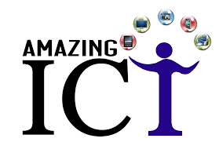

WELCOME TO ICT PAGE
ICT in education improves engagement and knowledge retention: When ICT is integrated into lessons, students become more engaged in their work. This is because technology provides different opportunities to make it more fun and enjoyable in terms of teaching the same things in different ways.
OUR SERVICES